← Reference

[시공 정보]
커튼의 우아함과 블라인드의 실용성을 하나로
유니슬렛은 커튼 특유의 풍성한 볼륨감에 블라인드의 정교한 각도 조절 기능을 결합한 혁신적인 스마트커튼입니다. 번거롭게 열고 닫을 필요 없이, 슬랫을 가볍게 회전시키는 것만으로 화사한 자연광 유입부터 확실한 사생활 보호까지 자유롭게 연출할 수 있습니다.
1,000번의 경험이 만드는 디테일, 써니케임홈
써니케임홈은 2020년부터 1,000곳 이상의 현장을 직접 실측하고 시공해 온 전문 브랜드입니다. 지금 보시는 공간 역시 써니케임홈의 꼼꼼한 손길로 직접 완성한 현장입니다.
남향 거실인데 앞 건물이 가깝습니다.

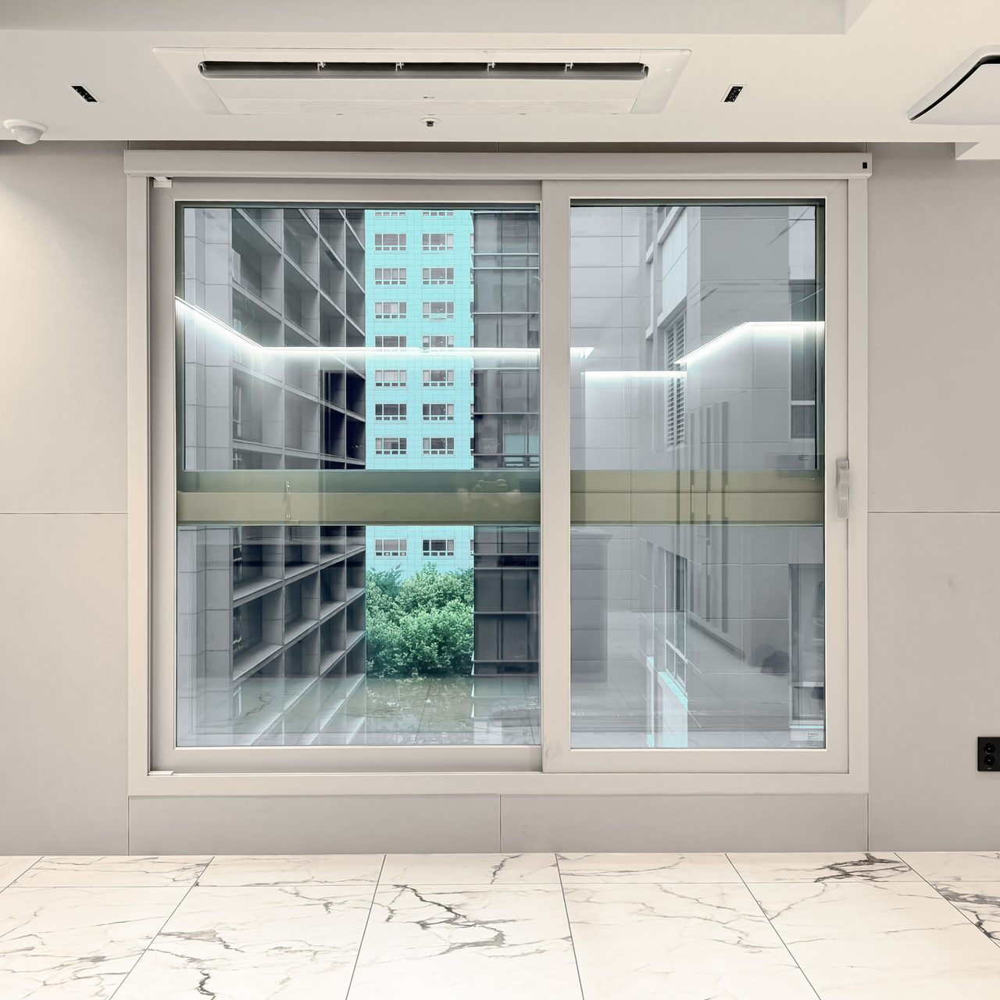
커튼을 걷자니 사생활이 걱정되고, 치자니 한낮에도 집안이 어둡고 답답해집니다. 동간 거리가 가까운 아파트에서는 흔히 둘 중 하나를 포기하며 '앞 동이 가까우니 어쩔 수 없지'라고 타협하곤 합니다.
하지만 유니슬렛은 그 타협에 동의하지 않습니다.
커튼을 닫아둔 상태에서도 따스한 햇살은 온전히 들이고, 외부의 시선은 완벽하게 차단합니다. 채광과 프라이버시, 이제 어느 것 하나 포기하지 마세요.
우선 영상을 통해 조작과 채광별 모습을 확인해 보세요.
커튼에 바라는 것은 두 가지입니다. 빛과 시선.
보통 커튼은 이 둘을 함께 움직입니다. 걷으면 빛도 시선도 같이 열리고, 치면 같이 닫힙니다.
그래서 속커튼으로 시선을 거르고 겉커튼으로 빛을 막습니다. 커튼이 두 개 필요합니다.
유니슬렛은 커튼 하나로 이 둘을 따로 다룹니다.
슬랫에 망사면과 암막면이 번갈아 짜여 있습니다. 각도를 돌리면 어느 면이 앞으로 나오는지가 바뀝니다.
커튼은 그대로 두고 밝기만 바꿉니다.
풀 채광 · 각도 조절 · 사생활 보호. 커튼 한 폭이 세 가지 상태를 가집니다.
컬러를 화이트로 고른 것도 같은 이유입니다. 채광량이 넉넉하지 않은 집에서 실내를 밝게 보이게 합니다.
https://blog.naver.com/sunnycamehome
https://smartstore.naver.com/sunnycamehome
강남, 서초, 송파, 강동 등 서울 전 지역 시공합니다
낮에는 화사하게, 사생활 걱정 없이
망사면이 정면을 향하도록 슬랫을 세운 풀 채광 상태입니다.
햇빛이 망사에 부딪혀 한 번 꺾이면서 들어옵니다.
직사광선이 그대로 들이치지 않아 거실 분위기가 부드럽고 화사해집니다.
낮에는 실내와 바깥의 밝기 차이 때문에 밖에서 안이 잘 보이지 않습니다.
커튼을 친 채로 채광은 받고, 시선은 막힌 상태입니다.
시간대마다 필요한 만큼만 빛을 들입니다
거실 창 두 개를 3분할로 제작했습니다. 창과 창 사이 한번, 오른쪽 창문으로 가는 벽체에서 한 번 한 번 더 나눴습니다.
구역마다 풀 채광 · 각도 조절 · 사생활 보호 세 가지를 따로 둘 수 있습니다.
세 구역 × 세 가지, 아홉 가지 조합이 나옵니다.
나누는 이유는 구조 때문이 아닙니다. 좌우면의 채광을 상황에 맞게 따로 쓰기 위해서입니다.
해의 위치는 시간대마다 바뀝니다. 그때그때 필요한 구역만 돌려 쓰시면 됩니다.
참고로 왼쪽 창이 3.38m라 통으로 만든 레일은 엘리베이터에 들어가지 않습니다. 그래서 정중앙에서 1.69m씩 나눴습니다.
밤에 등을 켜도 실루엣이 드러나지 않습니다
슬랫을 모두 눕힌 상태입니다. 밤에 거실 등을 켜도 실루엣이 드러나지 않습니다.
낮에는 채광량을 확 줄여 주어 간이 암막으로도 쓰실 수 있습니다. 사진보다 실제가 더 어둡습니다.
커튼 한 폭이 빛과 시선을 나눠 씁니다
암막면과 망사면이 번갈아 짜여 있습니다. 슬랫을 돌리면 어느 면이 앞으로 나오는지가 바뀝니다.
망사면이 앞이면 빛이 들어오고, 암막면이 앞이면 시선이 막힙니다.
커튼 두 개가 하던 일을 원단 한 장이 합니다.
각도가 돌아가는 모습과 커튼을 이동시키는 모습은 영상이 정확합니다.
풀 채광 / 각도 조절 / 사생활 보호 / 미세 조정 / 이동
봉 하나만 돌리면 됩니다
여닫는 것도, 각도를 바꾸는 것도 커튼봉 하나로 합니다. 창 하나당 2개가 들어갑니다.
봉을 돌리면 왼쪽으로 90도, 오른쪽으로 90도 움직입니다. 회전 범위가 180도입니다.
정해진 단계가 없어서 원하는 만큼 미세하게 맞출 수 있습니다.
블라인드처럼 조절되고, 커튼처럼 풍성합니다
슬랫 한 장 한 장이 둥글게 말려 있습니다. 각이 아니라 곡선입니다.
각도는 조절되는데 볼륨이 없는 것이 블라인드입니다.
볼륨은 있는데 각도가 안 되는 것이 커튼입니다.
유니슬렛은 원단으로 각도를 만듭니다. 그래서 둘 다 됩니다.
사진에서 도톰해 보이는 면은 원단이 아니라 빛입니다. 망사를 지난 햇빛이 곧장 통과하지 않고 표면에 동그랗게 얹힙니다.
천장과 벽에 딱 맞게 떨어집니다

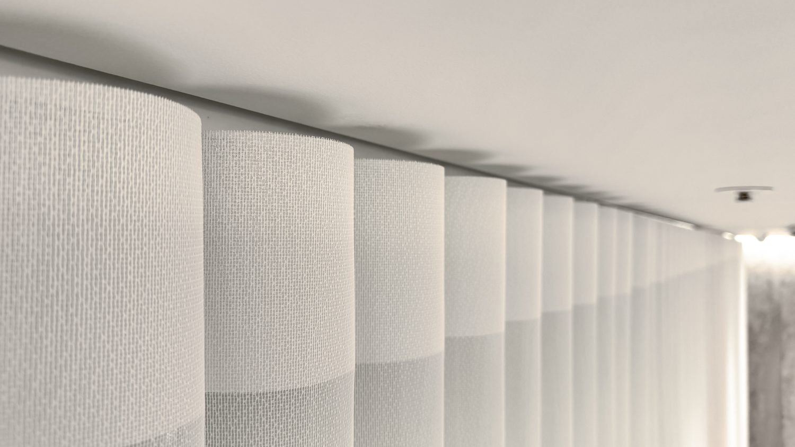
튼 윗선을 천장에서 살짝 띄워 답니다. 천장에 붙이지 않습니다.
그래야 원단이 눌리지 않고 곧게 떨어집니다.
결과적으로 천장 선과 벽면에 딱 맞아떨어지는 모습이 나옵니다.
바닥은 2cm 정도 띄웁니다. 끌리면 먼지가 붙고 밑단부터 상하기 때문입니다.
더 내려 달라고 하시면 맞춰 드립니다. 보기에는 좋습니다. 대신 먼지 관리를 그만큼 자주 하셔야 합니다.
끊김 없는 한 폭, 방이 더 넓어 보입니다
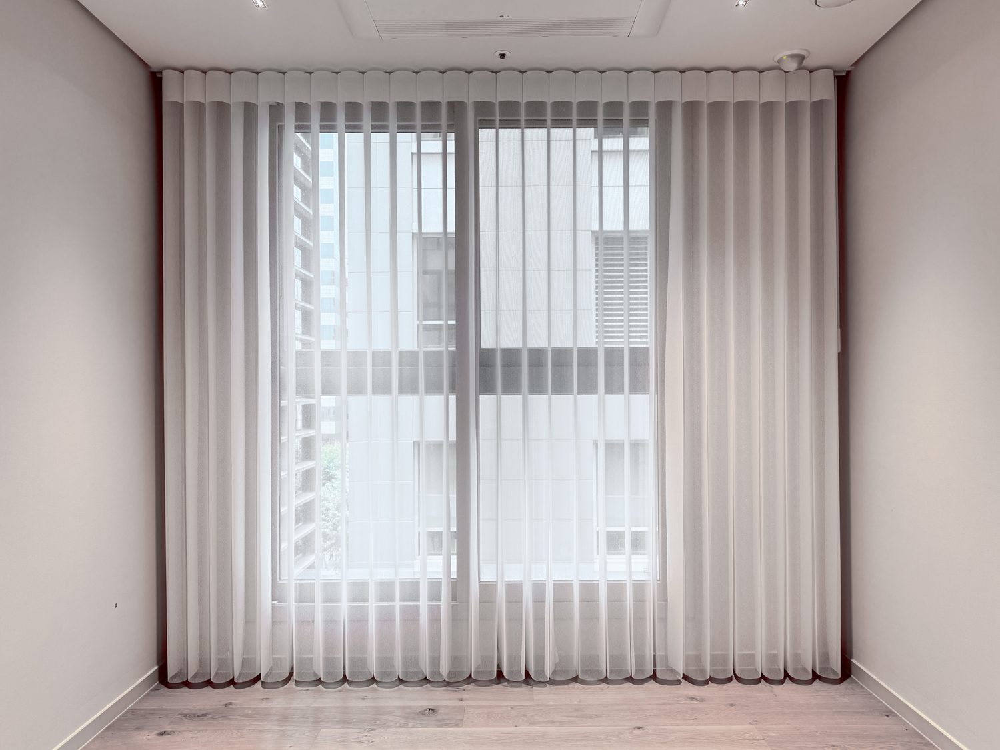

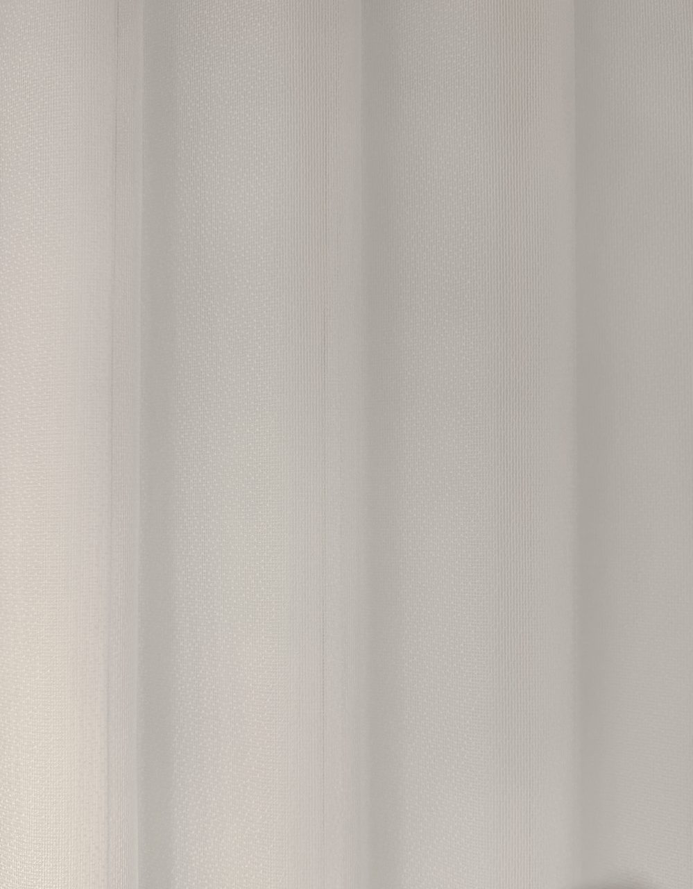
이음매 없이 한 폭으로 떨어질 때가 가장 아름답습니다.
가로선이 없으니 벽 전체가 하나로 읽히고, 방이 실제보다 넓어 보입니다.
침실은 가로 2.8m, 그래서 나누지 않았습니다. 이 집에서 나눈 창은 3.38m짜리 하나뿐입니다.
나눠도 되는 창을 굳이 나누지 않습니다. 나누면 금액은 올라가고 쓰임은 그대로입니다.
거실은 나누고 침실은 나누지 않았지만 집이 따로 놀지 않습니다. 제품과 컬러가 같기 때문입니다.
(분할) 나눈 자리가 눈에 띄지 않습니다
커튼을 나누면 나뉜 자리마다 조작용 커튼봉이 한 줄씩 들어갑니다. 봉이 앞으로 나와 있으면 그만큼 두 커튼 사이가 벌어집니다.
이 집은 창과 창 사이에서 커튼박스가 끊겨 있어 나뉜 자리가 더 눈에 띄었습니다.
봉을 원단 뒤로 숨겨 그 틈을 최대한 줄였습니다. 실제 생활할 때는 잘 보이지 않습니다.
커튼을 나누는 자리는 정중앙이 원칙입니다.
다만 정중앙이 보기에 어색한 창이 있습니다. 그럴 때는 샷시 선에 맞춥니다.
그중에서도 뒤에 유리가 없는 샷시를 고릅니다.
유리 앞에 분할선을 두면 풀 채광일 때 창문이 3cm쯤 드러납니다. 각도를 조금 돌리면 가려지지만, 처음부터 샷시에 맞추면 그럴 일이 없습니다.
이 집 왼쪽 창은 정중앙에서 나눴습니다. 3.38m를 1.69m씩으로.
인테리어를 앞두고 계시다면 커튼박스 폭을 20cm로
이 집은 15cm였습니다. 완전히 접혀 들어가지는 않고, 걷힌 원단이 박스 앞선까지 나옵니다.
쓰는 데는 지장이 없습니다. 다만 «걷으면 안 보인다»를 기대하셨다면 이야기가 달라집니다.
시공 전에 먼저 말씀드리고 시작합니다.
천장 공사가 끝나면 나중에 바꾸기 어려운 숫자입니다.
전동은 모터가 자리를 차지하니 23cm 이상을 권합니다. 13cm보다 좁으면 유니슬렛 슬림으로 대응합니다..
▷ 커튼박스 기준과 실측 방법
https://blog.naver.com/sunnycamehome/224367870447
한 장만 빨고, 한 장만 바꿉니다
커튼 전체를 떼어 맡길 일이 없습니다. 슬랫이 낱장으로 되어 있어 한 장씩 분리해 세탁하고, 손상되면 그 한 장만 바꿉니다.
평소 관리 — 한 달에 한 번, 무선청소기의 매트리스 툴로 약한 바람으로 먼지를 제거하세요.
물세탁 — 미지근한 물에 중성세제를 풀고 20분 담근 뒤, 헹궈서 자연건조합니다.
▷ 유니슬렛 청소 & 세탁 방법
https://blog.naver.com/sunnycamehome/222015003413
이사 갈 때 그대로 가져가실 수 있습니다
이사하실 때 떼어 가서 다시 답니다. 가로는 슬랫을 더하거나 빼고, 높이는 재단합니다. 버리고 새로 사지 않으셔도 됩니다.
다만 정품이어야 합니다. 써니케임홈은 ㈜좋은아침창에서 제작한 오리지널 유니슬렛만 취급합니다. 원산지는 국내(경기도)입니다.
디자인 특허를 가진 제품이고, 2010년대 후반부터 해외로 나가고 있습니다.
무상 AS는 1년이고 이후에는 유상입니다.
가로 좌측 벽에서 우측 벽까지
세로 천장에서 바닥까지
정확하지 않아도 괜찮습니다. 대략만 알아도 방향은 잡힙니다.
창이 여러 개면 공간별로 나눠서 알려주세요. 이 집처럼 한 벽에 창이 두 개인 구조는 특히 그렇습니다. 몇 구역으로 갈지가 거기서 갈립니다.
견적은 창의 면적으로 계산합니다. 같은 평수라도 창이 크면 올라가고 작으면 내려갑니다.
제품마다 계산 방식도 달라서, 창을 보기 전에 말씀드리는 금액은 대개 틀립니다.
실측은 구매를 생각하고 계신 분께 서울·경기 무료로 나갑니다.
맞춤 제작이라 제작에 들어간 뒤에는 취소·반품이 제한됩니다. 그래서 정확히 재고 시작합니다.
역삼 래미안 — 거실 유니슬렛 이분할 시공사례
https://blog.naver.com/sunnycamehome/224379469714
압구정 미성 — 확장형 거실, 채광 3단계
https://blog.naver.com/sunnycamehome/224376137533
수원 광교호수마을 호반써밋 — 아파트 1층 전체
https://blog.naver.com/sunnycamehome/224109767478
유니슬렛 상품 페이지
https://smartstore.naver.com/sunnycamehome
https://blog.naver.com/sunnycamehome
강남, 서초, 송파, 강동 등 서울 전 지역 시공합니다

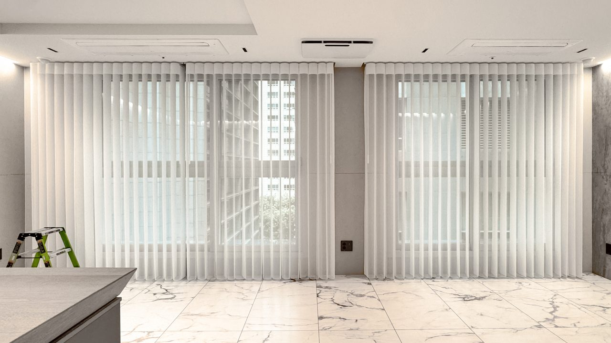
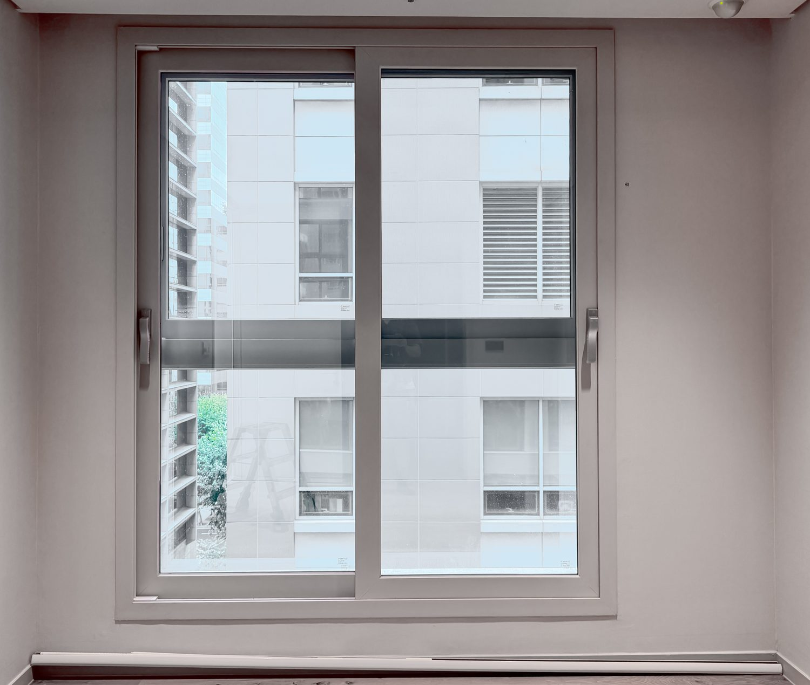
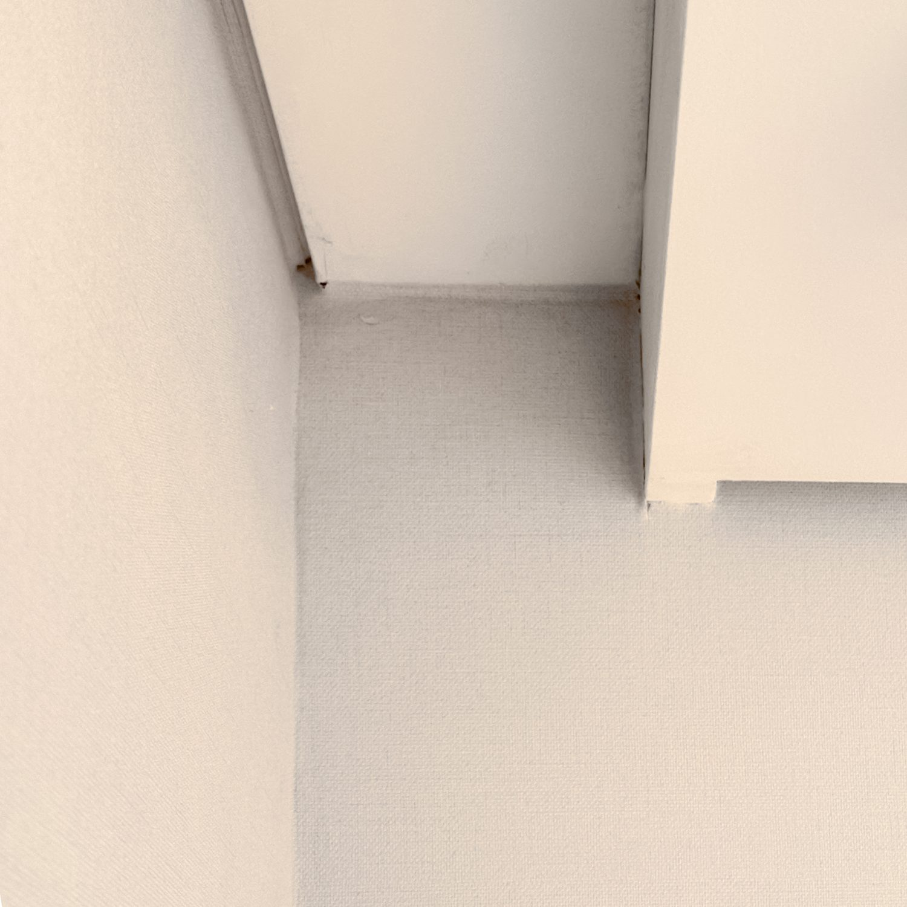
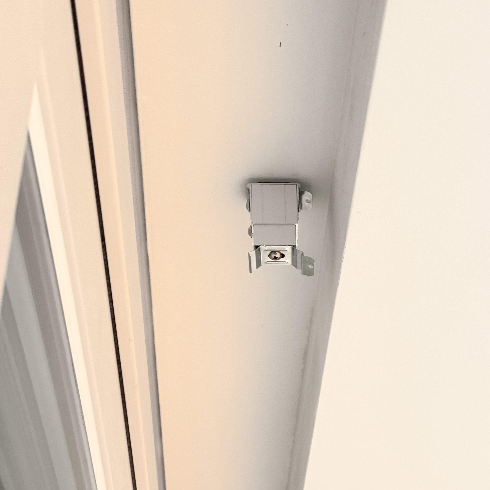
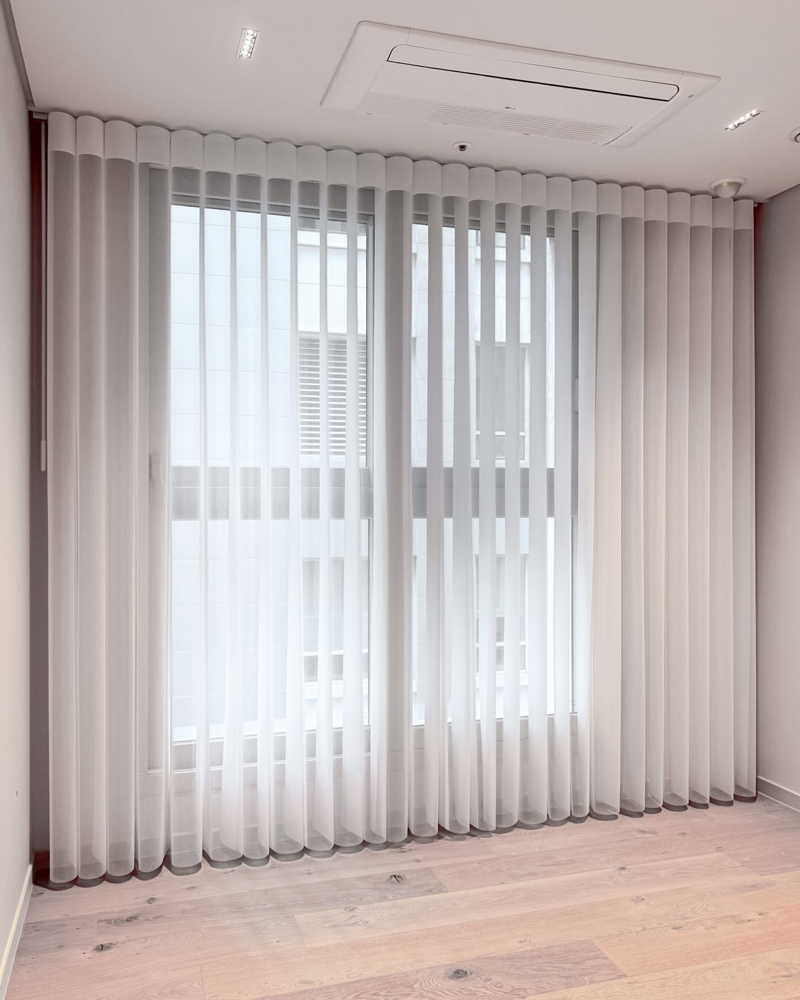
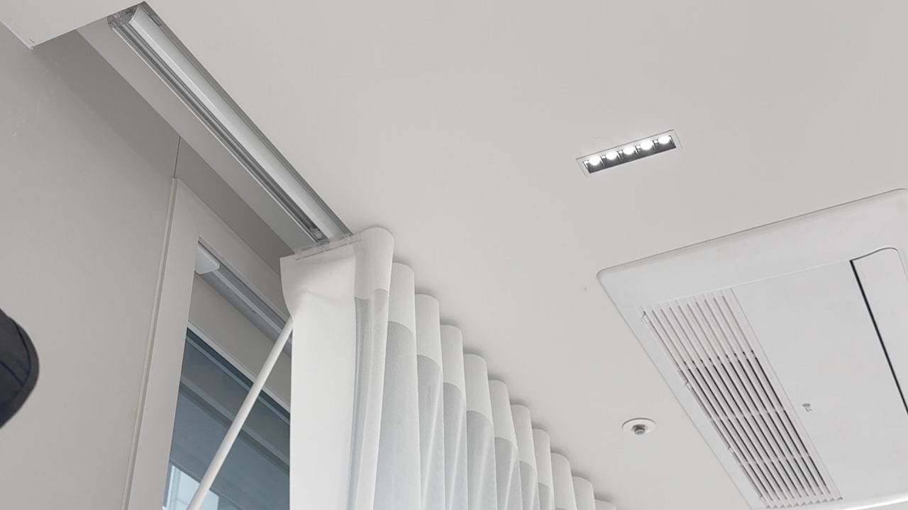

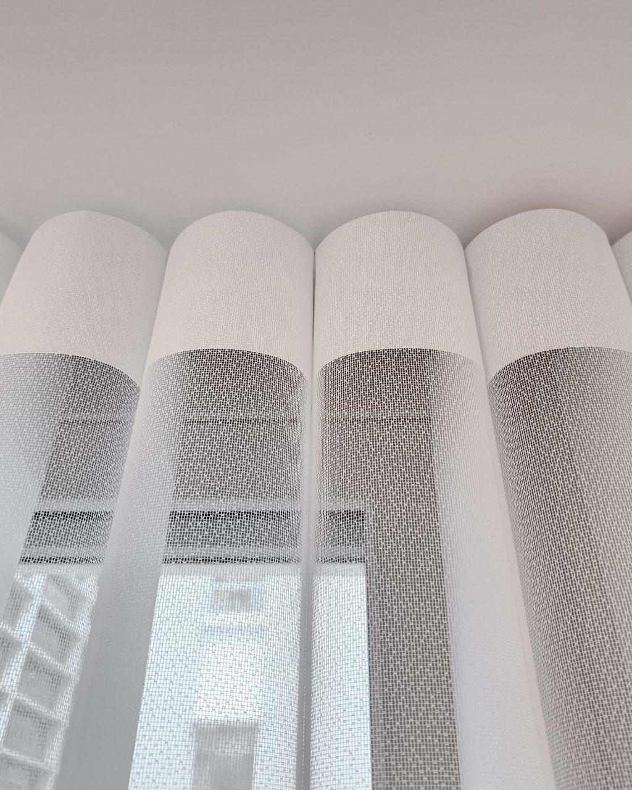
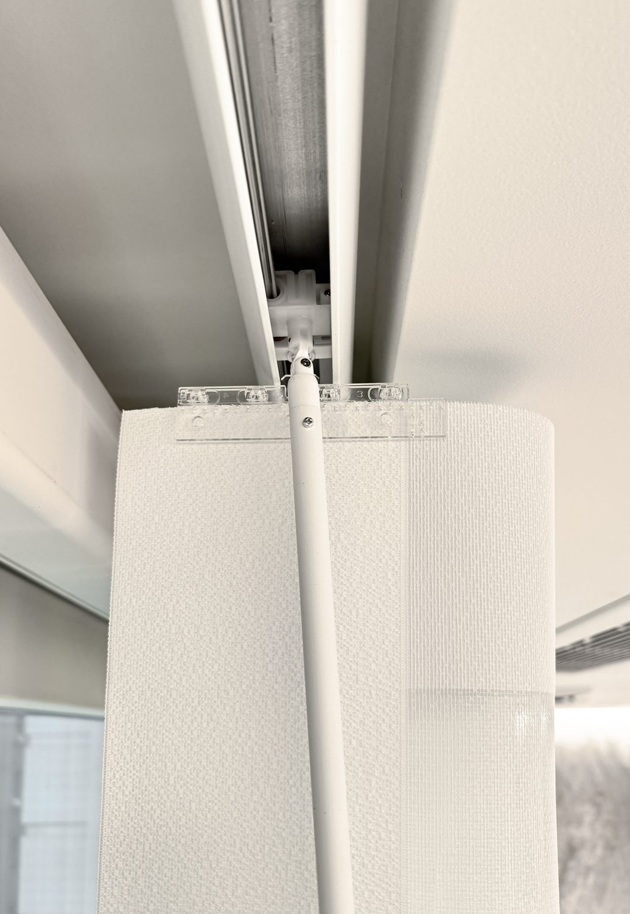

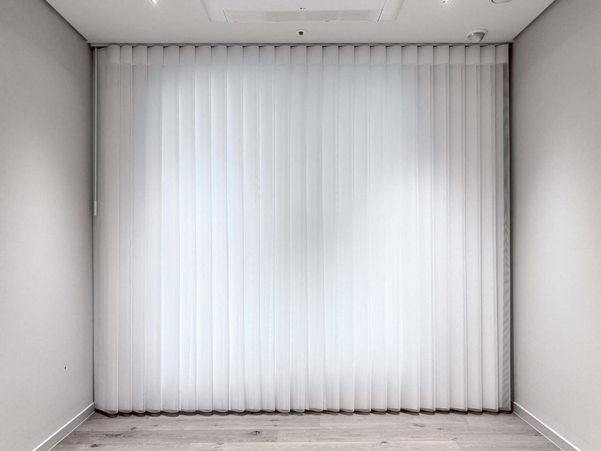
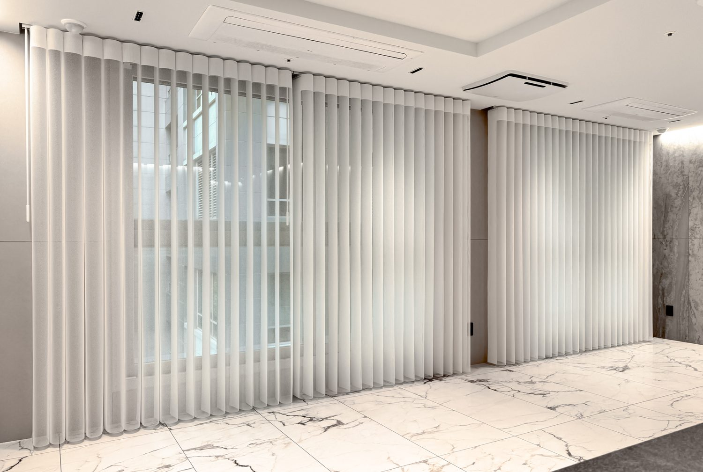
실측은 사장이 직접 나갑니다. 창을 보고, 커튼박스를 재고, 되는 것과 안 되는 것을 말씀드립니다.